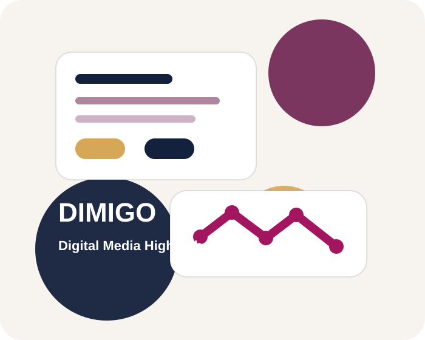

e-비즈니스과
디지털 서비스, 온라인 비즈니스, 데이터 활용을 중심으로 IT와 경영 감각을 함께 기르는 학과입니다.
IT · Media · Security · Business
한국디지털미디어고등학교는 개발, 디자인, 보안, 비즈니스를 실제 프로젝트와 진로 설계로 연결하는 IT 특성화 고등학교입니다.

학과별 프로젝트와 실습 기반 수업을 통해 결과물을 직접 만들어 봅니다.
대학 진학과 IT 실무 역량을 함께 준비할 수 있는 환경을 제공합니다.
규칙적인 생활과 집중 학습 분위기 속에서 자기주도성을 기릅니다.
Departments
디지털 서비스, 온라인 비즈니스, 데이터 활용을 중심으로 IT와 경영 감각을 함께 기르는 학과입니다.
디자인, 영상, 콘텐츠 제작, 사용자 경험을 바탕으로 미디어 콘텐츠 제작 역량을 키우는 학과입니다.
웹사이트, 서비스 개발, 프론트엔드와 백엔드의 기초를 배우며 실제 작동하는 프로그램을 제작합니다.
정보보안, 네트워크, 시스템 보호 기술을 배우며 안전한 디지털 환경을 만드는 역량을 기릅니다.
Career Results
진학률 예시
실제 최신 수치로 수정 필요취업률 예시
실제 최신 수치로 수정 필요전공 학과
IT·미디어·보안·비즈니스Clubs
HTML, CSS, JavaScript를 활용해 실제 웹서비스를 제작합니다.
보안 개념, CTF 문제 풀이, 네트워크 기초를 함께 학습합니다.
촬영, 편집, 기획을 통해 학교 생활과 프로젝트를 영상으로 표현합니다.
모바일 앱 아이디어를 설계하고 간단한 프로토타입을 제작합니다.
Daily Schedule
수업 전 준비와 학급 조회가 이루어집니다.
일반 교과와 전공 기초 수업을 진행합니다.
급식과 휴식을 통해 오후 수업을 준비합니다.
프로젝트, 실습, 협업 활동 중심 수업이 진행됩니다.
기숙형 생활에 맞춰 학습과 생활 관리가 이루어집니다.
Admission Guide
학과별 교육과정, 학교생활, 입학 전형은 매년 바뀔 수 있으므로 최종 정보는 반드시 학교 공식 홈페이지와 모집요강을 확인해야 합니다.